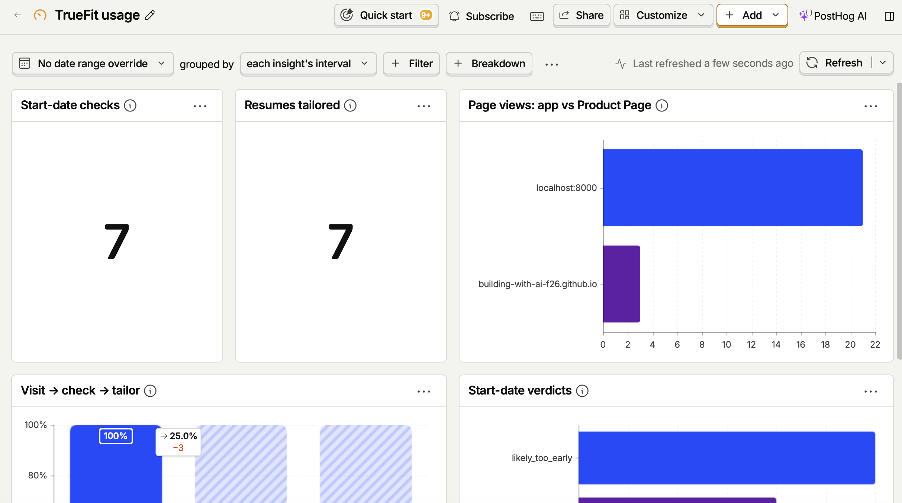

Paste a job posting. Know if you're eligible, starting with the start date, and get a resume for it that's ATS-ready and 100% true.
Built for MBA students recruiting for roles starting in 2027.
Product Showcase (Prototype / Live App / 2-Min Video)
Current Status: Build 2: smallest local version with analytics
Demo: Screenshot below; live cloud app URL coming in Build 5.

![TrueFit's eligibility exhibit for a made-up posting, Strategy Manager at Litware Retail. Action title: 'You meet both requirements this posting states.' Rows: Start date, In window, quoting 'Start date: September 2027'; Degree, Meets, quoting 'an MBA or equivalent graduate degree'; Work authorization, shown for information as 'Authorization required', quoting 'must be legally authorized to work in the United States' with a note to ask the recruiter about sponsorship; Years of experience, shown for information as '4+ years required', quoting '4 years of professional experience'.](images/app-build2-eligibility.png)
Living PRD (Product Requirements Document)
| Owner | Emma Schmidt (builder; product, design, and engineering) |
|---|---|
| Document status | Draft v2.2 · Build 2 (smallest local version, with the eligibility check) |
| Target release | Local app through Week 4; cloud launch with Build 5 (Dec 7, 2026) |
| Testers | Second-year Stern MBA classmates in my section, pod, and recruiting clubs |
| Detailed spec | specs/001-start-date-truthful-resume (requirements, plan, and tasks) |
| Last updated | Nov 13, 2026 |
Objective: Help MBA students spend their limited recruiting time only on roles they can actually start, and send a resume for each one that gets through applicant tracking systems without containing a single claim they can't back up. The test of success is simple: classmates use it instead of their current mix of reading postings closely, ChatGPT, and manual fact-checking.
1. Target User & The Job to Be Done
Who is this for? Second-year NYU Stern MBA students (my classmates) who graduate in May 2027 and are recruiting for full-time roles that start in June 2027 or later. I can reach them directly through my section, my pod, and recruiting clubs.
The painful "Before" workflow: For every posting, they read the whole description hoping to find a start date. Often it's buried, vague ("Summer 2027"), or missing, so they apply to roles they can't take or skip roles they could. Next they tailor their resume by hand or with ChatGPT, then check every line because the AI invents skills and metrics. Finally they paste the resume into Workday or iCIMS, where the parser scrambles the formatting, and they spend more time fixing fields one by one.
The "After" workflow with this product: They paste a job posting and their master resume. In one sitting, TrueFit first checks whether they're eligible: it finds the posting's hard requirements and quotes where it found each one. The start date is checked against when they can start (June 2027 or later by default, or another start month, "ASAP," or "Flexible"), and the degree against the MBA they're finishing; each gets a verdict (Meets, Doesn't meet, Unclear, or Not stated). Work authorization and years of experience are shown for their information, quoted, without asking them anything about visas or their work history. TrueFit never guesses a date or a requirement. When a posting gives no start date, TrueFit assumes the role starts as soon as possible and says so: "Likely too early" for a student who can't start yet, with a prompt to ask the recruiter. Skills and "nice to haves" aren't eligibility; they go in the gap list. It then writes a tailored resume in a plain, single-column, ATS-friendly format that pastes cleanly into Workday or iCIMS, and (from Build 3) downloads as a plain one-page Word file. Every bullet links to a line in their real resume, anything it can't back up is flagged, and they can remove, restore, or edit bullets (edits are re-checked). The gaps between the posting and their experience are listed as Required or Preferred so they know what they can't claim. Their master resume can be saved on their own device so they don't paste it every time.
2. Scope & Explicit Non-Goals
- In Scope (Core Workflow): Paste one job posting and a master resume → get an eligibility check of the posting's hard requirements (start date and degree checked against the student's availability, default June 2027 or later, and their MBA; work authorization and years of experience shown for information), then a tailored, ATS-friendly resume where every claim is verified against the master resume and any gaps are listed.
- Out of Scope #1: Scraping job boards, auto-applying, or auto-filling Workday/iCIMS forms. Users paste postings in themselves.
- Out of Scope #2: Application status tracking or pipeline management. That's a different job, and spreadsheets and tools like Huntr already handle it.
- Out of Scope #3: Anything beyond the resume, including cover letters, LinkedIn rewrites, interview prep, and designed templates or PDF styling. The output is plain and ATS-safe: copy-ready text, plus a plain one-page Word (.docx) download planned for Build 3.
- Also out of scope for v1: uploading PDF or Word files (text paste only), fetching postings from a URL, non-English postings, and user accounts or syncing across devices.
- Not eligibility: judging skills or the quality of someone's experience (that's the gap list), and legal or visa advice. TrueFit only reports what the posting says about work authorization.
3. How It Works Under the Hood & Riskiest Assumption (Week 2+)
Riskiest Assumption: That an AI model can tailor a resume without slipping in skills, numbers, or claims that aren't in the student's master resume. If one invented claim gets through, the "100% true" promise breaks and students go back to checking every line. How we test it: the model only drafts; plain code then checks every bullet against the resume lines it cites (exact numbers, no posting keywords the student doesn't have), plus a second AI support check. Anything that fails is flagged and left out by default. A fixed set of 10 test cases is re-run whenever prompts or models change.
How Build 2 tests it: Build 2 tests the risk directly. Tailoring is built: the model only drafts bullets and must cite the numbered resume or note lines behind each one, then plain Python flags any bullet whose numbers aren't in those lines or that names a skill or tool found only in the posting (acronyms like SQL and CFA, and capitalized names like Tableau), and a second model call checks every remaining claim. Ordinary posting words the student never used ("forecasting", "shape") are sent to that check as words to verify, so fair synonyms pass but unbacked skills don't. Flagged bullets are left out unless the student puts them back. On a 15-case tailoring eval (6 normal, 3 messy, 6 adversarial: a posting demanding SQL, Python, Tableau, and a CFA the student doesn't have; a metric-dense resume; a cover letter that's only "eager to build SQL skills"; a STAR story where the student supported a launch their manager led; a posting asking for forecasting, underwriting, and machine learning in lowercase; and tools listed at the start of bullet lines, where Python's skill check can't see them), 0 kept bullets contained an untraceable number, skill, or requirement, or turned a goal or a supporting role into a claim (rerun Nov 12 after narrowing the skill check). One fair-looking bullet of 63 was flagged for review. Limitation: in the two newest cases the model never tried to use the missing skills, so the words-to-verify path is covered by a unit test, not yet by an eval failure it caught. The start-date check uses the same pattern and is also tested: will the model report only text that is really in the posting? The model's only job is to find and quote start-date lines. Plain Python code then confirms each quote appears word for word in the posting, drops any that don't, and works out the verdict itself, so the model never decides whether a date fits. On the 22-case start-date eval run against the real model, TrueFit got 22 of 22 right and never stated a date the posting didn't contain (still 22 of 22 after the eligibility questions were added to the same call, Nov 13).
How the app works (Build 2): [Web page: paste posting + availability] → [Small Python (FastAPI) server on my laptop that holds the API key in .env and stores nothing] → [AI model via OpenRouter: finds and quotes start-date lines and the degree, work-authorization, and years-of-experience requirements] → [Python checks: every quote really in posting, date rules, start-date and degree verdicts] → [Eligibility exhibit: a row per requirement with the quoted evidence]. Then: [master resume + optional writing about their experience (notes, cover letters, STAR stories, essays), saved only on the student's device] → [server numbers every line] → [AI drafts tailored bullets citing line numbers] → [Python checks numbers and posting-only words; a second AI call checks each claim] → [bullets with sources and Traced/Unverified badges; remove, put back, edit and re-check] → [copy-ready plain text]. PostHog records page views, clicks, and funnel events from the web page (never posting or resume text) and errors from the server.
Eligibility (pulled forward into Build 2): the start-date call now also quotes the posting's degree, work-authorization, and years-of-experience requirements, so it is still one model call per check. Python confirms every quote appears word for word in the posting (and that the years number is in its own quote), then decides the degree verdict; the model never decides whether a student is eligible. The undergraduate warning became the degree check. Work authorization and years of experience are information only: the row says what the posting asks for (for example "No sponsorship" or "4+ years required") with the quote, and the student is never asked about visas or their work history. Only start date and degree count toward the action title ("You meet both requirements this posting states"). On the 31-case eval (the 22 start-date cases plus 9 eligibility cases covering each sponsorship wording, years required, preferred, and spelled out, a required PhD, and a posting that states none of them), TrueFit got 31 of 31 start dates and 27 of 27 requirement rows right, and never quoted a requirement the posting didn't state (Nov 13).
Planned for Build 3: the gap list (what the posting asks for that the student can't claim, grouped Required / Preferred) and a one-page Word download. The Word download is the same kept bullets as the copy-ready text, in one plain column with standard headings: no tables, columns, or text boxes, so ATS parsers read it. TrueFit fits it to one page by adjusting font size (10–11 pt) and margins (0.5–0.75 in) from a length estimate; if it still won't fit, TrueFit says which bullets to remove instead of cutting the student's content itself. It adds one library, python-docx, and no model call.
Pitch (updated Nov 13, when eligibility shipped): "Paste a job posting. Know if you're eligible, starting with the start date, and get a resume for it that's ATS-ready and 100% true." Start date and degree get a verdict; work authorization and years of experience are shown with the posting's own words so students can judge them.
4. Unit Economics & Analytics Snapshot (Updated Weekly)

5. Success Metrics
| Goal | Metric | Target |
|---|---|---|
| Fast answers | Time from paste to start-date verdict / to copy-ready resume | < 30 s / < 2 min |
| Correct start dates | Verdict matches a human reviewer on 10+ real postings | ≥ 9 of 10, and never a date the posting doesn't state |
| 100% true | Bullets in the copy-ready resume that trace to the master resume; altered numbers | 100%; zero |
| One-page download | Word downloads that open on one page in Word with no manual edits (Build 3) | ≥ 9 of 10 tests |
| ATS-ready | Pastes into Workday/iCIMS keeping order, no garbled characters | ≥ 9 of 10 tests |
| Correct eligibility | Each requirement's verdict matches a human reviewer on 20+ real postings | ≥ 9 of 10 per requirement, and never a requirement the posting doesn't state |
| Useful gap list | Unsupported requirements caught vs. a human reviewer; Required/Preferred grouping agreement | ≥ 80%; ≥ 90% |
| Worth using | Classmate testers who say it's faster and they don't re-check every line | ≥ 3 |
6. Requirements (User Stories)
| # | User story | Importance | Notes |
|---|---|---|---|
| 1 | As a student, I paste a posting and see each hard requirement (start date, degree and graduation timing, work authorization, years of experience), the line it came from, and whether I meet it. | Must have (P1) | Start date is built (default: starting June 2027, so any later start fits; or another start month, ASAP, or Flexible). Degree is checked too (Build 2); work authorization and years of experience are shown for information, not judged. No date in the posting means TrueFit assumes as soon as possible and says so; it never invents a date. |
| 2 | As a student, I get a tailored resume where every bullet is traced to my master resume, and I can remove, restore, or edit bullets. | Must have (P1) | Unbacked lines and edits are flagged and left out by default. Numbers never change. |
| 3 | As a student, I copy a clean plain-text resume and see what the posting asks for that I can't claim. | Should have (P2) | Single column, standard headings, hyphen bullets. Also downloads as a one-page Word file (Build 3). Gaps grouped Required / Preferred. |
7. Assumptions
- Users: Second-year Stern MBAs graduating May 2027; most can start from June 2027, and a later start is never a problem.
- Inputs: Postings and resumes are in English and pasted as text.
- Vague dates: Spring = Mar–May, Summer = Jun–Aug, Fall = Sep–Nov.
- Graduation windows: When a posting gives no start date but says who it hires by graduation date (e.g., "graduating between December 2026 and June 2027"), the role starts after graduation. TrueFit quotes that line and says "In window" (with a note that it's based on the graduation window) if the window reaches the student's start month. A class year alone ("Class of 2027") still counts as not stated.
- Rewording: Allowed (new verbs, reordering, shortening) as long as no facts are added and numbers stay exact.
- Privacy: No accounts. Nothing is stored on a server; the master resume is saved only on the student's device and can be cleared anytime.
- No eligibility profile: TrueFit assumes the student is finishing an MBA and asks only when they can start. It never asks about visas or years of work; it shows what the posting says about them.
- Preferred vs. required: years of experience are labeled "required" or "preferred" as the posting states them; unlabeled requirements count as required. Other preferred items go in the gap list.
- No start date: A posting with no start date usually wants someone as soon as possible. TrueFit treats it that way: "Likely too early" (amber) for a student available later, "Likely in window (vague)" for one available now or flexible. A class year alone ("Class of 2027") still counts as no start date.
- Output: One page; plain copy-ready text and (from Build 3) a plain Word file are enough for Workday and iCIMS.
8. Open Questions
| Question | Answer | Date answered |
|---|---|---|
| Should TrueFit remember a student's master resume between visits? | Yes, on their own device only; clearable; no accounts. | Nov 4, 2026 |
| Can students set their own availability? | Yes: an "available starting" month (default June 2027; any later start fits), or ASAP or Flexible. Changed from a June–Oct range the same day. | Nov 4, 2026 |
| Should TrueFit screen out roles meant for undergraduates? | Yes, as a warning above the verdict with the quoted line, when the posting targets people pursuing or finishing a bachelor's degree, or is a new-grad program whose only named degree is a bachelor's. "Bachelor's degree required" for an experienced role, or any posting that names an MBA, doesn't trigger it. | Nov 10, 2026 |
| Should a graduation window count when no start date is given? | Yes, as quoted evidence: "In window" if it reaches the student's start month, with a note saying it's based on the graduation window. Two real 2027-start postings showed "Not stated" because they only gave a graduation window. | Nov 10, 2026 |
| Can students edit the tailored resume? | Yes: remove, restore, or edit bullets; edits are re-checked. | Nov 4, 2026 |
| If a posting gives no start date, should TrueFit assume as soon as possible? | Yes, flagged rather than strict: "Likely too early" for students available later, with a prompt to ask the recruiter. Reverses the Build 2 call to keep "Not stated", after real postings with no date came up in testing. | Nov 12, 2026 |
| Should the tailored resume download as a Word file? | Yes, as a plain one-page .docx in Build 3, so students don't reformat by hand. | Nov 12, 2026 |
| Should gaps separate required from preferred? | Yes; unlabeled requirements count as Required. | Nov 4, 2026 |
| Should "Flexible" allow an optional end date? | No: availability no longer has end dates. | Nov 4, 2026 |
| Should TrueFit check eligibility, not just the start date? | Yes, for hard requirements only: start date, degree and graduation timing, work authorization, and required years of experience. Skills stay in the gap list. Built in Build 2 (Nov 13). | Nov 12, 2026 |
| Should work authorization be checked? | Yes, as information only. It's often the first thing international students look for, so TrueFit shows what the posting says (no sponsorship, sponsors visas, authorization required, or citizenship required) with the quote, but doesn't ask whether the student needs sponsorship. Changed Nov 13 from an optional profile question. | Nov 13, 2026 |
| Should TrueFit ask for years of experience? | No. The row shows what the posting asks for ("4+ years required" or "2+ years preferred") with the quote, and students compare it with their own experience. | Nov 13, 2026 |
| Should there be one overall eligibility verdict, or only one per requirement? | One per requirement. The action title counts them ("You meet both requirements this posting states") instead of giving a single pass/fail that could hide an Unclear row. | Nov 13, 2026 |
| Which AI model gives the best accuracy for the cost? | Open (compare on the 10-case test set in Build 2) | — |
| How often does the fact check flag fair rewordings? | Open (measure in Build 4) | — |
| Can I get access to a real Workday or iCIMS form to test pasting? | Open | — |
Weekly Build Log
Build 1 · Intent.md & Throwaway Prototype (Due Nov 9)
- What shipped: A working local prototype of the start-date check (screenshot above): paste a posting and TrueFit pulls out the start date, quotes the line it came from, and says whether it fits your availability (In window, Likely in window if vague, Outside window, or Not stated, never a guessed date). Availability is a start month (default June 2027), ASAP, or Flexible. Built with FastAPI and OpenRouter; plain error messages for key, credit, and model problems; 90 automated tests passing, and 14/14 correct on a start-date eval set run against the real model. Also shipped: this Product Page with PRD v1.1, a written spec, plan, and task list (
specs/001), and agent rules inAGENTS.md. Resume tailoring is next. - Things learned with AI: How to set up and work with Claude Code in the terminal; common terminal commands and the language for describing what I want done (from Terminus Episodes 1 and 2); how to create an API key and keep it out of my code with a
.envfile; and how to download and use skills to extend what Claude Code can do. - What broke / changed in PRD: PRD went from v1 to v1.1. The biggest change: availability is no longer a fixed June–October 2027 window. Students now give the month they can start (default June 2027), and any later start counts as in window, because a later start is never a problem for a graduating MBA. They can also choose ASAP or Flexible (I briefly had an "Immediate" option too, then dropped it). I also decided that the master resume is saved only on the student's own device, that students can remove, restore, or edit tailored bullets (edits are re-checked), and that gaps are grouped Required vs. Preferred. Added explicit out-of-scope items (PDF/Word upload, posting URLs, non-English postings, accounts). Nothing in the app broke. The one blocker was publishing this page: my account didn't have the admin access needed to turn on GitHub Pages in the class organization. Once Pages was enabled, the page went live on Nov 7.
- Cost & time this week: $22.00 ($5.00 OpenRouter credits, $0.08 used; $17 Claude Pro, prorated monthly) · 4 hours
Build 2 · Smallest Local Version & PostHog (Due Nov 16)
- What shipped (so far): Redesigned the app to match this Product Page: violet header, numbered steps, and a verdict card with an icon and one plain-language sentence for each verdict. Added a "Try a sample posting" button for quick demos and a loading spinner while the check runs. When a posting lists no start date, TrueFit still says "Not stated" rather than guessing, and now adds that this often means as soon as possible and to ask the recruiter. Added PostHog to this page and the local app: page views, clicks, and three funnel events (sample posting used, start date checked, check failed), sending only the verdict or error code, never posting text. Updated the PRD to v2 (how this build tests the riskiest assumption, how the app works now) and added a project structure section to
AGENTS.md. Start-date fixes from real postings: a graduation window ("Must be graduating in December 2026 or Spring 2027") now counts as In window, and postings aimed at undergraduates or new-grad bachelor's programs get a warning. Pulled tailoring forward from Build 3: students paste a master resume plus anything else they've written about their experience (notes, past cover letters, behavioral/STAR stories, application essays), and TrueFit uses only what they say they did, never goals or things they hope to learn; TrueFit writes a tailored resume where every bullet shows the lines it came from, flags anything it can't trace, and lets them remove, put back, or edit bullets (edits are re-checked) and copy plain text for Workday or iCIMS. Pulled the eligibility check forward from Build 3 (Nov 13): the same model call now also quotes the posting's degree, work-authorization, and years-of-experience requirements; degree gets a verdict, and the other two are shown for information with the quote, so students are never asked about visas or work history. 31 of 31 start dates and 27 of 27 requirement rows right on the eval, with 0 invented requirements. Verified in PostHog on Nov 10: page views, clicks, start-date checks, and a session replay from the local app; Product Page page views confirmed Nov 12. - What broke and how I fixed it: Testing tailoring with a resume pasted from a PDF showed the line breaks were lost: job headers were glued onto the end of the previous bullet, and the contact line, EDUCATION, and the first school ran together on one line. TrueFit now restores the breaks before numbering lines and takes each entry's section from the master resume. The model also sometimes filed a job's title, company, or dates as a bullet; lines now carry a kind (heading, header, bullet) worked out from the student's own formatting, and Python moves header-only bullets back into the header. The Copy button sometimes said "Copied" when nothing was copied; it now copies inside the click and only says "Copied" when it worked.
- Lessons: My own clean test resumes hid the biggest problems; a real resume pasted from a PDF broke the structure in a way no eval case did, so I'll add messy pasted input to the eval set. And keeping the model's job small (draft and cite) while plain Python does the checking made each of these bugs easy to find and fix without touching the prompt's honesty rules.
- What changed in PRD: I considered two changes and kept the PRD as written. (1) Pasting a job posting link instead of the text: many job sites (Workday, iCIMS, LinkedIn) block automated reading or need a login, so links would often fail; TrueFit stays paste-only, and fetching from a URL stays out of scope. (2) Treating a posting with no start date as ASAP: because ASAP counts as "starts now," students available from June 2027 would see "Outside window" on roles they could actually take. TrueFit keeps "Not stated" (it never guesses a date) and now adds a hint that a missing date often means as soon as possible. Update, Nov 12: after testing real postings with no start date, I reversed this. TrueFit now assumes as soon as possible and flags it as "Likely too early" for students available later, rather than showing a plain "Not stated". I also added a one-page Word download to Build 3. Update, Nov 13: pulled the eligibility check forward from Build 3 and made work authorization and years of experience information only, with no profile questions, so TrueFit never asks students about visas or their work history. Decided one verdict per requirement instead of an overall one, and updated the pitch to "Know if you're eligible, starting with the start date."
- Cost & time this week: $2.48 OpenRouter (credits used went from $0.08 to $2.56, including about $0.20 of tailoring evals and about $0.26 on Nov 13 for the eligibility eval and cost measurement) · 7 hours
Build 3 · Build.exe: The Core Workflow (Due Nov 23)
- What shipped: [End-to-end workflow working with real inputs + PostHog funnel events]
- What broke / changed in PRD: [Fill in]
- Cost & time this week: $[0.00] · [0] hours
Build 4 · Test.py: Choose Track A or Track B (Due Nov 30)
- Chosen track: [A: 10-case domain eval and one outside target-user review; OR B: 3–5 outside users and replay findings]
- Results and improvements: [Before/after evidence; for Track B, fixes to the top three friction points]
- PRD v4 changes: [What the evidence changed]
- Cost & time this week: $[0.00] · [0] hours
Build 5 · Ship.installer: Launch Ops, Rollback Check & 2-Min Video (Due Dec 7)
- Launch Ops & Safety: [Verified no exposed keys, set spend cap, tested 2-minute rollback]
- 2-Minute Video & Final Polish: [Link/embed above]
- Cost & time this week: $[0.00] · [0] hours